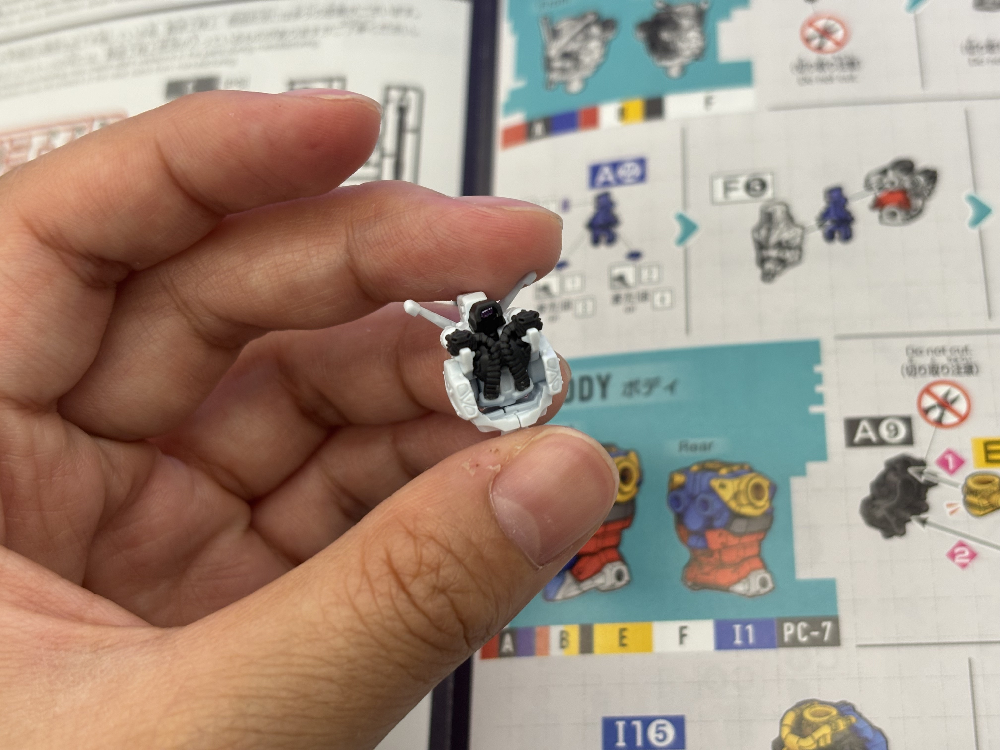

Modern GunPla kits are snap-fit, no-glue kits. The assembly procedure exploits the mechanical-property pairing described in Section 4: HIPS pegs interfere with LLDPE polycap sockets to make the joints, and HIPS-on-HIPS cantilever snap-fits hold the armor halves together. The standard build follows a fixed sequence. The engineering invariants — that the kit assembles in one direction, that snap-fits engage with predictable click forces, that the polycap-and-peg fit is repeatable across thousands of mold cycles — are properties of the polymers and the molds, not of the assembler.
6. How to Assemble Gundam Model Kits
6.1 The Build, in One Sentence
Engineering Invariant
The builder is not deciding when a snap fits. The geometry of the cantilever, the modulus of the HIPS, and the diametral interference of the polycap socket all conspire to produce a click at a specific force. The build feels effortless because Bandai has already done the engineering.
6.2 Tools and Workspace
A pair of thin flush-cut nippers (preferably single-bevel) for cutting parts free of the runner; a hobby knife with a #11 blade for nub removal; optionally fine sandpaper (#400–#1000) for cleaning visible surfaces; a cutting mat to keep small parts from rolling away. Glue is not used. Paint is optional.
6.3 Two-Stage Cutting
Each part is cut from its runner using a two-stage cut: first a coarse cut several millimeters from the part to relieve stress, then a flush cut at the gate. Two-stage cutting reduces the white stress mark caused by polystyrene crazing at the cut edge — a direct consequence of HIPS being a notch-sensitive amorphous polymer. Cutting flush in one pass concentrates strain at the gate base and triggers visible crazing.
6.4 Polycap Insertion and Snap-Fit Closure
Polyethylene polycaps from PC7 are pressed into the recessed sockets of HIPS armor halves before the halves are joined. Because polyethylene is more compliant than HIPS, the polycap deforms elastically into the socket; once seated, it cannot be easily removed.
Most armor parts are split into a left and a right half that join along a centerline. Each half has a cantilever snap feature — a peg with a barbed undercut — that deflects elastically as it enters the mating socket then springs back to lock. HIPS designers taper the cantilever toward the tip to even out strain distribution and avoid root-fracture during repeated assembly.
6.5 Sub-Assembly Chaining
Sub-assemblies (head, torso, arms, legs, backpack/wings, weapons) are joined via polycap joints in the order specified by the manual. The polycap joints provide post-assembly articulation: rotation, pivot, and ball-and-socket motion as appropriate to each location.


6.6 Decals and Panel Lining
Stickers or water-slide decals are applied last, and panel-line ink (typically an enamel-based wash) is run into the recessed lines and wiped off. The slight polarity of the styrene matrix allows the wash to wet the panel lines without beading. Polycap surfaces, by contrast, would reject the wash entirely if it came into contact with them — another consequence of polyethylene's low surface energy.